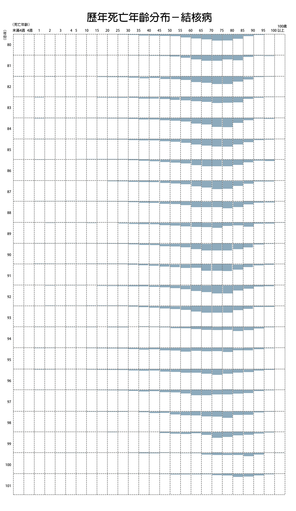

從20年死因變化看台灣
張簡如閔、陳燕珩、蔣珮伊、陳俊瑋、李廣和/報導
每年衛服部公告的「國人十大死因」經常是民眾關注的重點，在過去20年間，台灣的死因出現了排名消長與區域變遷，在死亡人口年齡上，部分死因也出現向年輕族群靠攏趨勢。癌症、心臟疾病、腦血管疾病、高血壓......等經常在死因排行榜上的名列前茅，且大部分死因的死亡人口逐年遞增。
死亡人數增 死亡人口年輕化
由下面幾張圖可知，自民國80年起不同死因在不同年齡的分布，整體而言，大多數疾病致死人口數提升，且部分疾病，癌症、心臟病、腦血管疾病、糖尿病等，皆有年輕人口致死人數上升情形。
癌症：
癌症死亡年齡增高，整體死亡人數也增加，但35歲以下死亡人數則有減少趨勢。
腦血管疾病：
腦血管疾病死於30-50歲者有增加的趨勢，年輕患者死亡率增加。
事故傷害：
事故傷害15-20歲後死亡數量遽增。整體死亡人數減少，尤其是50歲以下；5- 10歲的青少年事故傷害死亡者也大幅降低。
心臟疾病：
心臟疾病60歲以前的死亡數量增加，因心臟疾病而死者已擴展至更年輕的族群，且整體死亡人數變多。
肝病：
肝病的死亡人數和年齡層分布，二十年來變化不大，只有人數些微增加。
糖尿病：
糖尿病死亡人數整體變多，尤其35-60歲死亡人數增加最為明顯，顯示死亡年齡有年輕化趨勢。
肺炎：
肺炎致死者近年來人數攀升，中高齡者死亡人數逐漸上升。
高血壓：
因高血壓致死者有近年有年輕化的趨勢，且總體人數攀升。
呼吸疾病：
呼吸疾病(支氣管炎、肺氣腫及氣喘)致死者近年來有年齡層擴大趨勢，同年齡層致死人數則日益降低。

肺結核：
早期因罹患結核病致死者較現今各年齡層多。
腎病：
因罹患腎臟相關疾病(腎炎腎徵候群及腎性病變)死亡年齡有愈趨高齡化之現象，且總體人數攀升。
敗血症：
近五年死於敗血症的人數明顯大幅增多，年齡集中在70-90歲間。
胃病：
胃病的死亡人數近五年有下降，且75歲以下的死亡人數變少。
自殺：
自殺的年齡層分布從20-40歲，往40-50歲增多，且整體人數有增加的趨勢。
離島及偏鄉地區 各死因的死亡比率皆偏高
下面這張動態圖表呈現各個死因中，每十萬人口的死亡人數最高之五大城市，並隨年份推移變化。
從各死因來看，死亡比率最高的為離島地區、花蓮縣及台東縣；雲林、嘉義次之。特別的是，花東常被視為空氣好，但死於呼吸疾病者卻最多。
癌症、心臟疾病和腦血管疾病，死亡比率較高的離島及花東地區，不僅有醫院數量不足的問題，既有的醫院層級也較低，缺乏醫學中心，面對重大病症時較難處理。而意外事故死亡率高的東部山區，離醫院平均距離較一般城市遠，遇到需急救的情況時，需花上更多送醫時間。
此外，近十年基隆縣幾乎位居自殺死亡數前三名，宜蘭縣、南投縣也有多次上榜。而相較於其他死因，較少見的縣市，如台中市、高雄縣、嘉義市、新竹市、新北市都出現在生產死因前三名。整體因生產而死亡的人口較位在北部城市。
80年
81年
82年
83年
84年
85年
86年
87年
88年
89年
90年
91年
92年
93年
94年
95年
96年
97年
98年
99年
100年
101年
癌症、肺炎死亡比率增加 事故傷害減少
下面這張動態地圖呈現各縣市每十萬人口中，十五種死因的死亡人數（死亡人口比率），以圓圈大小表示，並隨著年份推移變化。
整體來看，各縣市死亡比率最高者多為癌症、心臟疾病及事故傷害，且二十年來的排名沒有太大變化。但若針對個別死因做長期觀察，癌症死亡人口比率逐年增加（圓圈增大），事故傷害比率則愈來愈少。此外，許多縣市近五年肺炎的死亡比率皆增加，可能與空氣污染程度加劇相關。
比較各縣市的圓圈大小，可看見五都各死因的死亡人口比率都較少，偏鄉、離島城市則大許多。若針對五都比較，台南市的平均圓圈大小高於其他四都，死亡人口比率最高。偏鄉離島則是台東、澎湖的死亡比率最高。
80年
81年
82年
83年
84年
85年
86年
87年
88年
89年
90年
91年
92年
93年
94年
95年
96年
97年
98年
99年
100年
101年